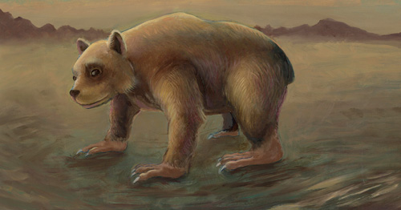

Based on fossil evidence from Russia and Bulgaria, the first known members of the family Procyonidae lived in Europe in the late Oligocene about 25 million years ago. Similar tooth and skull structures suggest procyonids and weasels share a common ancestor, but molecular analysis indicates a closer relationship between Raccoons and bears. After the then-existing species crossed the Bering Strait at least six million years later in the early Miocene, the center of its distribution was probably in Central America. Coatis (Nasua and Nasuella) and Raccoons (Procyon) have been considered to share common descent from a species in the genus Paranasua present between 5.2 and 6.0 million years ago. This assumption, based on morphological comparisons of fossils, conflicts with a 2006 genetic analysis which indicates Raccoons are more closely related to ringtails.
